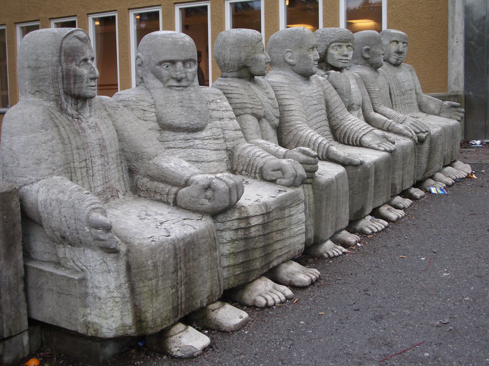
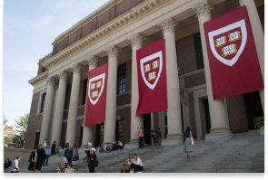

Uma breve introdução
Paulo Reglus Neves Freire foi um educador e filósofo brasileiro. É considerado um dos pensadores mais notáveis na história da pedagogia mundial, tendo influenciado o movimento chamado pedagogia crítica. É também o Patrono da Educação Brasileira.
Curiosidades
- Paulo Freire é um dos homenageados na estátua Efter Badet, que fica na Suécia. 
- Lecionou em Harvard durante 10 meses no período de seu exílio. 
Você pode ler mais curiosidades em AppSindicato